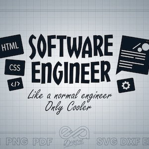
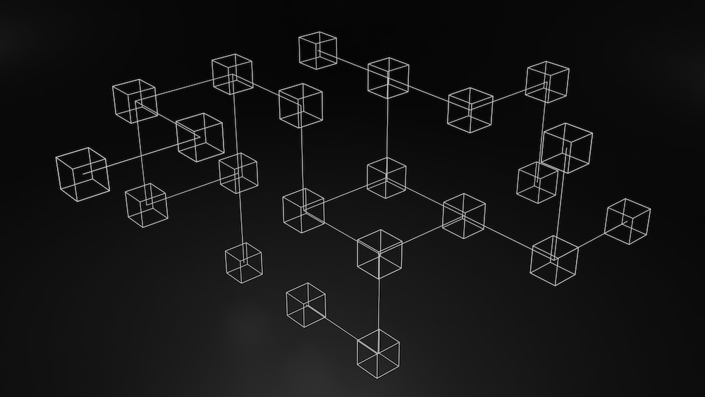

A Blog Site for Engineering Students
Welcome to my blog. Subscribe and get my latest blog post in your inbox.
Lets Talk About Computer Science and Engineering (CSE)
কম্পিউটার সাইন্স এবং ইঞ্জিনিয়ারিং Computer Science and Engineering (CSE) নিয়ে কথা বলব আজকে | আজকে আলোচনা করবো CSE তে ভর্তি হওয়ার আগে কি শিখবো ? কি ধরনের ফ্রিল্যান্সিং করব ? কেন সবাই জব পাচ্ছেনা, সিজিপিএ ম্যাটার করে নাকি স্কিলস ? কিভাবে জবের জন্য নিজেকে তৈরি করব ? অনলাইন কোর্স, ফ্রী বুক সহ 4 বছরের স্টেপ বাই স্টেপ CSE ম্যাজিক Roadmap বলে দিব | ......
Read more →

All About Software Engineering
আজকে আমরা কথা বলবো সফটওয়্যার ইঞ্জিনিয়ারিং (software engineering ) নিয়ে | এই পোস্টে আপনাদের যাবতীয় প্রশ্নের উত্তর এবং চার বছরে স্টেপ বাই স্টেপ ম্যাজিক রোডম্যাপ সহ দেওয়া থাকবে | ......
Read more →
Most Hyped IT Sector "Data science"
বলতে পারেন Data science এখন সবথেকে জনপ্রিয় ক্যারিয়ার ফিল্ড গুলোর মধ্যে একটি | কিভাবে একজন Data scientist হবেন সেটা বিষয়ে সমস্ত প্রশ্নের উত্তর আছে আমি এখানে দেবো | ...
Read more →

Most Hyped IT Sector "Data science"
আজকে পোস্টে আমরা ব্লকচেইন (Blockchain) নিয়ে কথা বলবো | ব্লকচেইন কি?কেন আমাদের ব্লকচেইন শেখা দরকার ? ব্লকচেইন কি ধরনের জব অপরচুনিটি ফিউচারে আমরা পাব ...
Read more →